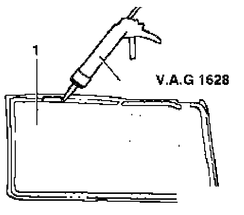
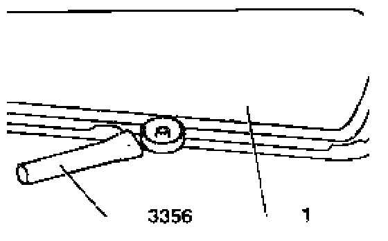

Vapor Barrier, Replacement Part From 03/95
Replacement part - vapor barrier 03.95 ----->

- Apply adhesive D 469 101 A3 (adhesive bead of approx. 5 mm or 3/16 in. diameter) to around edge of vapor barrier -1- (shaded area) using cartridge pistol VAG1628.
CAUTION! Part numbers are listed for reference only. Always check with your Parts department for the latest information.
- Pass electrical wiring connectors (window regulator, speaker and exterior mirror adjustment) and operating rods, through vapor barrier and pull adhesive material protective strip off.
- Align vapor barrier, according to securing clip installation holes, and press on.

- Press vapor barrier -1- adhesive area (shaded area) on to door using roller 3356.
- Check that vapor barrier is securely bonded to door (especially lower section).